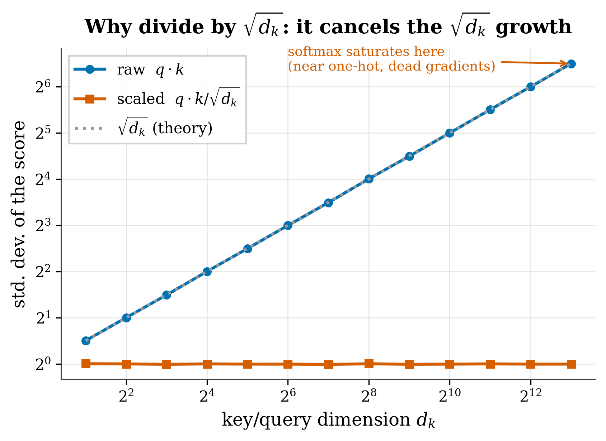

5 Attention as weighted aggregation
Where we are. We now have each token turned into a vector traveling along the residual stream. Here comes the central act —the one the book is named for: attention, the rule by which each token decides which of the others to pay attention to and blends their information. By the end you’ll be able to compute an attention by hand, code it in ~15 lines, and tell which popular claims about it are true, which are folklore, and which are marketing.
5.1 The idea in one sentence
Each token updates itself by becoming a weighted average of the information from the other tokens, where the weights are decided by the model itself on the fly, according to what’s relevant.
🧩 Analogy. You’re in a meeting and someone asks a question. You look around: a couple of people really know the topic, the rest not so much. Without thinking, you weight what you hear —you listen closely to those who know, half-ignore the rest— and your answer comes out as a blend, dominated by the ones who matter. That’s exactly what attention does with each word: it blends information from the others, giving more weight to the relevant ones. The only special thing is that the model decides “who is relevant” on the spot, from the words themselves.
5.2 Key concepts and their role in the transformer
Before diving into the details, let’s define this chapter’s terms and what each one is for inside a transformer:
- Weighted aggregation. Definition: building a token’s output as an average of the information from the others, weighting the relevant ones more. In the transformer: it’s what attention does; the mechanism by which information travels between words.
- Query, key, and value (Q, K, V). Definition: three vectors the model derives from each token via learned tables —what it looks for, what it advertises, and what it delivers. In the transformer: splitting into Q, K, and V is what lets the model learn what to connect with what instead of following a fixed rule.
- Dot product. Definition: a way to measure how similar two lists of numbers are (multiply them pairwise and sum). In the transformer: it compares one token’s query with another’s key; if the result is large, they “seek each other” → high weight.
- Logits / scores. Definition: the raw comparisons \(q_i\cdot k_j\) before normalizing. In the transformer: they’re the raw material of the weights; the softmax turns them into a blend.
- Scaling by \(1/\sqrt{d_k}\). Definition: dividing the scores by the square root of the key dimension. In the transformer: it keeps the logits in a manageable range so the softmax doesn’t saturate regardless of the model’s width; it’s a derivable constant, not magic.
- Softmax. Definition: the function that turns a row of scores into non-negative weights that sum to 1. In the transformer: it imposes the “budget of 1” (attending more to one means attending less to another) and makes the blend a genuine average.
- Attention map (\(A\)). Definition: the \(n\times n\) matrix of weights, what gets visualized as a heatmap. In the transformer: it tells you where the weight goes; its square size is the source of the O(n²) cost that makes long context expensive.
- Causal mask. Definition: setting the scores toward the future to \(-\infty\) before the softmax. In the transformer: in generative models (GPT-style) it stops a token from looking at the ones that come after it, a requirement for generating text word by word.
With these in hand, let’s flesh them out.
5.3 What attention is for (its role in the transformer)
Before the formulas, the most important thing: what work does attention do inside the model, and why does the transformer need it?
Attention is the only place where information travels between words. Everything else in the transformer —in particular the feed-forward network (Ch. 6)— processes each word separately, like islands. Without attention, the word “he” couldn’t find out who it refers to, and “bank” wouldn’t know whether it’s next to a river or in the stock market: each token would be stuck with its dictionary meaning, with no context.
Its job, in one sentence: to give context to each word by letting it gather information from the others. It’s what turns a bag of loose words into a understood text. That’s why it’s the heart of the transformer (and of this book): how well a model attends is, to a large extent, how well it understands.
5.4 The blending formula
In symbols, the new representation of token i is:
\[ \text{output}_i = \sum_j \alpha_{ij}\, v_j \tag{5.1}\]
What each term does:
- \(v_j\) = the value contributed by token j (what information it delivers if attended to).
- \(\alpha_{ij}\) = the weight: how much token i listens to token j. It’s non-negative and all of i’s weights sum to 1.
- \(\sum_j\) = we sum over all tokens j → the output is a blend.
All the art is in computing the weights \(\alpha_{ij}\). Let’s take it piece by piece.
5.5 Queries, keys, and values (Q, K, V)
Where do the weights come from? Each token vector is transformed into three different vectors via three “recipes” the model learns:
\[ q_j = W_Q\,x_j, \qquad k_j = W_K\,x_j, \qquad v_j = W_V\,x_j \]
Don’t let the formula scare you: \(W_Q, W_K, W_V\) are tables of numbers the model has learned, and “\(W\,x\)” (multiplying the token by the table) is just the mathematical way of saying turn this token into its query, key, or value version. You don’t need to know how to multiply matrices to grasp the idea.
The metaphor that really helps:
- Query \(q_i\) — “what is token i looking for?”
- Key \(k_j\) — “what does token j advertise about itself?”
- Value \(v_j\) — “what does token j deliver if attended to?”
Token i compares its query with each key via a dot product \(q_i \cdot k_j\). (The dot product is just a way to measure how similar two lists of numbers are: multiply them pairwise and sum; if both “point the same way,” the result is a large number.) If it comes out large, “j advertises what i is looking for” → high weight. Those raw scores are called logits; the softmax will turn them into the weights.
What’s the point of splitting into query, key, and value? It’s what lets the model learn what to connect with what, instead of following a fixed rule (“always look at the previous word”). The tables \(W_Q, W_K, W_V\) are tuned during training so that each token seeks and advertises exactly what the task calls for —that’s why a model learns, for example, to connect a pronoun with its referent.
That Q, K, V are three distinct learned projections of the same vector is the real mechanism, not a simplification: it’s what makes attention depend on content rather than being fixed.
5.6 Why we divide by √d_k
Before the softmax, the score is scaled by dividing it by the square root of the key dimension, \(d_k\):
\[ s_{ij} = \frac{q_i \cdot k_j}{\sqrt{d_k}} \tag{5.2}\]
What each term does:
- \(q_i \cdot k_j\) = the raw similarity between what i looks for and what j advertises (a sum of \(d_k\) products).
- \(d_k\) = how many dimensions the queries/keys have.
- \(1/\sqrt{d_k}\) = the scaling factor that keeps the score in a manageable range no matter how wide the model is.
🧩 Analogy. Think of the dot product as a tally: you score each of the \(d_k\) dimensions and add them up. Just as an exam with more questions has a higher total score, a sum over more dimensions yields larger numbers. We divide by \(\sqrt{d_k}\) to bring the scale back to “what one dimension is worth,” whatever the model’s width.
Why does it matter? If the scores grow huge, the softmax saturates —it puts almost all the weight on a single token and stops learning. Figure 5.1 shows this with real random vectors.

figures/make_fig03_3_scaling.py (seed 0).
If the components of \(q_i\) and \(k_j\) are independent with mean 0 and variance 1, their dot product is a sum of \(d_k\) terms, each of variance ≈1. Since they’re independent, the variance of the sum grows like \(d_k\) and the standard deviation like \(\sqrt{d_k}\). Dividing by \(\sqrt{d_k}\) brings the logits back to unit variance. It’s a derivable constant, not a magic number.
5.7 Softmax: from scores to weights
The softmax turns a row of scores into non-negative weights that sum to 1:
\[ \alpha_{ij} = \frac{e^{s_{ij}}}{\sum_{j'} e^{s_{ij'}}} \tag{5.3}\]
What each term does:
- \(e^{s_{ij}}\) = the exponential turns any score into a positive number and amplifies the differences (a slightly higher score carries away considerably more weight).
- \(\sum_{j'} e^{s_{ij'}}\) = the denominator (the sum of all of them) normalizes, so that the weights sum to exactly 1.
🧩 Analogy — the budget of 1. Each token has €1 of attention to split among all the others. A higher score buys a bigger slice, but the slices always sum to €1: attending more to one necessarily means attending less to others. Remember this competition for the attention sinks (Part II).
What is the softmax for here? To make the blend a genuine average: it turns raw comparisons (which could be negative or huge) into positive weights that sum to 1. Without it, the “blend” would be a sum of numbers with no scale, not an interpretable average.
There’s a deeper reading: the softmax is the maximum-entropy distribution (the one that assumes the least) consistent with a given expected score —the same idea that in physics gives the Boltzmann distribution. This is no footnote: in Part II we’ll see that combining this maximum entropy with the geometry of RoPE explains why attention decays as a power law —one of our results.
They sum to 1 and are non-negative, so formally they’re a distribution over the tokens —but treating them as the model’s beliefs is unjustified. Read them as mixing coefficients, not as probabilities.
5.8 The full operation, in matrices
In practice this is done for all tokens at once. (Stacking the vectors “into a matrix” is just putting them in rows, one per token, so that all comparisons happen in one shot rather than one at a time.)
\[ \text{Attention}(Q,K,V) = \text{softmax}\!\left(\frac{QK^\top}{\sqrt{d_k}}\right) V \tag{5.4}\]
What each piece does:
- \(QK^\top\) = the \(n\times n\) matrix of all pairwise scores (the
⊤is the transpose: it flips the key table so each query can be matched against each key) (each query against each key). - softmax(·) (row-wise) = turns each row into weights that sum to 1 → it’s the attention map \(A\), what gets visualized as a heatmap.
- \(\cdots V\) = multiplying by the values produces the output: each token, now as a weighted blend.
Notice the size of \(A\): \(n \times n\). That square is the source of attention’s quadratic cost and the reason long context is expensive —the central theme of Part II.
Causal mask. In a generative model (GPT-style), a token can only attend to itself and the ones before it. This is imposed by setting \(s_{ij} = -\infty\) for \(j > i\) before the softmax (so those weights become 0). We cover it in detail in Chapter 9.
5.9 A worked example by hand
With \(d_k = 2\) and three tokens (vectors already projected):
q₂ = [1, 0] # we compute the output for token 2
k₁ = [1, 0] v₁ = [10, 0]
k₂ = [0, 1] v₂ = [0, 10]
k₃ = [1, 1] v₃ = [5, 5]- Scores \(q_2\cdot k_j\): \(1,\,0,\,1\).
- Scale by \(\sqrt2≈1.414\): \(0.707,\,0,\,0.707\).
- Softmax: \(e^{0.707}=2.028,\ e^0=1,\ e^{0.707}=2.028\); sum \(=5.056\) → \(\alpha=[0.401,\,0.198,\,0.401]\).
- Blend: \(\text{output}_2 = 0.401[10,0]+0.198[0,10]+0.401[5,5]=[6.015,\,3.985]\).
Token 2 “looked mostly at tokens 1 and 3” (matching keys) and produced a blend dominated by their values.
5.10 From scratch in code
import torch
import torch.nn.functional as F
def attention(Q, K, V, causal=False):
# Q,K,V: (n, d) — one row per token
d_k = Q.shape[-1]
scores = (Q @ K.transpose(-2, -1)) / d_k**0.5 # (n, n) logits
if causal: # mask the future
n = scores.shape[-1]
mask = torch.triu(torch.ones(n, n), diagonal=1).bool()
scores = scores.masked_fill(mask, float('-inf'))
A = F.softmax(scores, dim=-1) # (n, n) attention map
return A @ V, A
Q = torch.tensor([[1., 0.]])
K = torch.tensor([[1., 0.], [0., 1.], [1., 1.]])
V = torch.tensor([[10., 0.], [0., 10.], [5., 5.]])
out, A = attention(Q, K, V)
print(A.round(decimals=3)) # tensor([[0.401, 0.198, 0.401]])
print(out.round(decimals=3)) # tensor([[6.015, 3.985]])Fifteen lines reproduce the by-hand computation. Everything else —multi-head (Ch. 5), FFN (Ch. 6), normalization (Ch. 7)— wraps around this core.
To see that attention is not a uniform blur, open an interactive visualizer like BertViz (Vig 2019) or the Transformer Explainer (poloclub): load a sentence and watch how the weight concentrates on a few positions —often the first token, the sink from Ch. 13. Later, in Part II, we’ll use our tafagent to measure that behavior with the exponent γ.
5.11 What an attention map does NOT tell you
It’s tempting to read a heatmap as the model’s explanation —“it predicted X because it attended to Y.” That inference is not valid in general.
A layer’s output is \(A\,V\) plus the residual plus the MLP; information also flows through the values and through later layers. A token can receive a lot of attention and contribute little (if its \(\lVert v_j\rVert\) —the length or magnitude of its value vector— is small), or receive little and still matter via the residual path. Empirically, the weights are often not faithful to what the model actually uses. Treat the maps as a diagnostic, not as proof of reasoning.
They’re genuinely useful —in Part II we use them to measure the decay— but as measures of where the weight goes, not as certificates of why the model decided something.
5.12 Summary
- Attention turns each token into a learned weighted average of the values (Equation 5.1).
- The weights come from the scaled dot product of queries and keys (Equation 5.2) and the softmax (Equation 5.3).
- The \(1/\sqrt{d_k}\) is a derivable variance normalization (Figure 5.1).
- The softmax imposes the budget of 1 (competition) and is maximum entropy —the seed of our decay law in Part II.
- The attention map is \(n\times n\) → quadratic cost (why long context is hard).
- The weights are mixing coefficients, not probabilities, and they don’t explain the model’s decisions.
Next (Chapter 5): a single attention is short-sighted. Multi-head attention runs several in parallel to look at several things at once.
5.13 Exercises
- By hand. Recompute the example with \(q_2=[0,2]\). Which token dominates the output now, and why?
- The scaling. Generate random \(Q,K\in\mathbb{R}^{1\times d}\) for \(d=4,64,4096\). Print the standard deviation of \(QK^\top\) with and without the \(1/\sqrt d\) factor. Confirm that the unscaled one grows like \(\sqrt d\).
- Saturation. Multiply the logits by 10 before the softmax. What happens to \(A\)? Relate it to “temperature.”
- Faithfulness. Build a 2-token example where i attends 0.99 to j and yet changing \(v_j\) barely changes the output. (Hint: a tiny \(\lVert v_j\rVert\).)